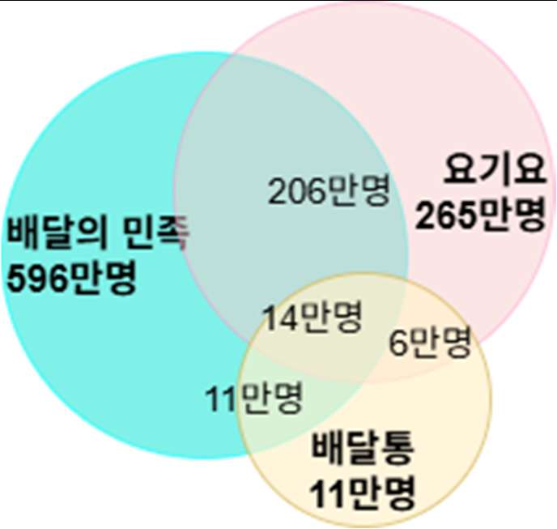
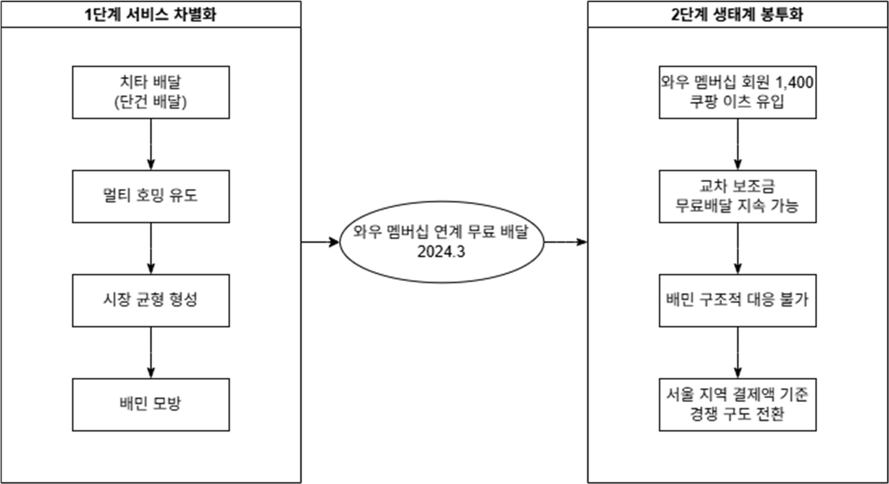
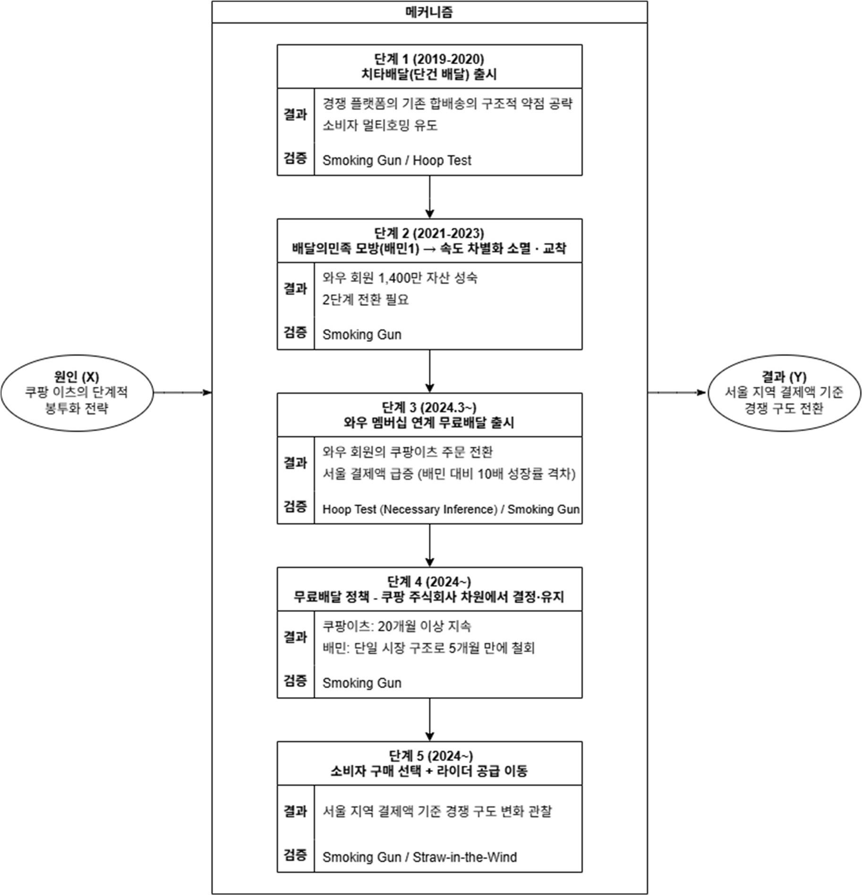

The food delivery app market has been regarded as one where strong network effects make an established competitive order hard to change. Yet from March 2024, starting with free delivery tied to its Wow membership, Coupang Eats overtook Baedal Minjok in Seoul by payment volume in just 18 months. Using process tracing, this study demonstrates that the shift was not the result of simple price competition but of a structural mechanism: ecosystem-based platform envelopment.
- This study empirically analyses how ecosystem-based envelopment transforms the competitive order in a mature platform market locked in by network effects.
- Existing platform envelopment theory explained market entry using ecosystem assets but gave insufficient consideration to whether a price advantage can be sustained.
- In Korea's food delivery app market, Coupang Eats overtook Baedal Minjok in Seoul by payment volume within 18 months of launching free delivery tied to its Wow membership in March 2024 — a case verified here through process tracing.
- The analysis finds that Coupang Eats first induced consumer multi-homing through speed differentiation in stage one, then in stage two drew in Coupang's 14 million Wow members directly, building a structurally inimitable competitive advantage through a pricing policy decided and sustained at the level of the parent company, Coupang Corp.
- By identifying the structural sustainability of cross-subsidisation as a success factor in platform envelopment, and by demonstrating the conditions under which a larger ecosystem's network effects weaken those of a single market, the study extends the scope of platform envelopment theory.
1. Introduction
1.1 Background
By 2019 Baedal Minjok held about 70% of the market, with millions of consumers, hundreds of thousands of merchants and a large rider network. Within a tri-sided market of consumers, merchants and riders, its network effects formed an all but insurmountable barrier to entry for latecomers. But on 26 March 2024, when Coupang Eats launched free delivery tied to its Wow membership, the market reached a dramatic turning point. Payment data obtained from eight card companies and released by the office of Representative Kim Nam-geun show that in August 2025 Coupang Eats recorded KRW 211.3 billion in Seoul, taking first place ahead of Baedal Minjok's KRW 160.5 billion.
What is striking is the divergence between indicators. Coupang Eats' rider app had about 800,000 users, more than double Baedal Minjok's roughly 400,000, yet in monthly active users Baedal Minjok still led with about 22.13 million. That the reversal in payment volume and in MAU did not occur together suggests that Coupang Eats' market penetration was driven not by a wholesale migration of users but by the concentrated conversion of high-frequency, high-value orderers tied to the Wow membership — evidence that an ecosystem-based structural mechanism was at work.

2. Theoretical background
Network effects and lock-in in platform markets
Under Katz and Shapiro's (1985) theory of network externalities, in markets with strong network effects a winner-take-all structure forms once the leading firm secures critical mass. Rochet and Tirole (2003) extended this to two-sided markets, showing that an asymmetric price structure — subsidising one side and recovering revenue from the other — is optimal. These theories explain how Baedal Minjok built its dominance but not why a leading platform with a powerful network loses that dominance to a latecomer.
Platform envelopment: ecosystem-based market entry
Eisenmann, Parker and Van Alstyne (2011) defined platform envelopment as "a strategy in which a provider in one platform market enters another, offering a multi-platform bundle combining its own functionality with that of the target platform, and capturing market share by exploiting shared user relationships." The Coupang Eats case meets all three conditions for effective envelopment: a shared user base, low bundling costs and the target platform's inability to defend. Fourteen million Wow members were a potential user base reachable at zero customer acquisition cost; the cost of bundling free delivery onto existing membership benefits was marginal; and Baedal Minjok, without an e-commerce ecosystem of its own, was structurally unable to counter in the same way.
Theoretical extension: conditions for sustainable cross-subsidisation, and a staged pattern of execution
Existing envelopment theory, however, does not answer whether the price advantage the enveloping firm offers in the target market is sustainable. This study identifies the structural sustainability of inter-segment cross-subsidisation — a profitable segment (e-commerce) covering the costs of a strategically important one (delivery) — as a necessary condition for successful envelopment. It also observes that Coupang Eats' envelopment strategy was executed in two sequential stages, with stage one (speed differentiation) inducing multi-homing so as to lower the switching friction of stage two (ecosystem envelopment), and presents this as a staged envelopment model.

3. Method
The study selects the Coupang Eats–Baedal Minjok contest as a revelatory case in Yin's (2018) typology and adopts Beach and Pedersen's (2019) process tracing. The cause (X) is Coupang Eats' staged envelopment strategy and the outcome (Y) the reversal of the competitive order by payment volume in Seoul; the causal mechanism between them is decomposed into five steps for verification: (1) inducing multi-homing through speed differentiation; (2) stalemate following Baedal Minjok's imitation and the shift to stage two; (3) conversion of Wow members' orders to Coupang Eats; (4) securing the sustainability of free delivery through cross-subsidisation; and (5) consumers switching primary platform and rider supply shifting.
Evidence was assessed for diagnostic value using Van Evera's (1997) four tests (straw-in-the-wind, hoop, smoking gun and doubly decisive), with most evidence classified conservatively at smoking gun or hoop level. The core causal claims rest not on interviews but on verifiable primary sources — audit reports for Coupang Eats Services and Woowa Brothers, Coupang Inc.'s SEC filings (10-K), and the card company payment data obtained by Representative Kim Nam-geun's office — with asynchronous interviews with three former Coupang Eats staff directly involved in strategy and operations used as a supplementary means of triangulation.

4. Case analysis
Stage one envelopment (2019–2023): Cheetah Delivery and Baedal Minjok's rapid imitation
The first structural barrier facing Coupang Eats on entering the market in April 2019 was a supply chain of experienced riders effectively pre-empted by Baedal Minjok. Coupang Eats went around it rather than through it, combining a crowdsourcing model with AI automatic dispatch so that anyone with a car or bicycle could register as a rider within 30 minutes. Early on it secured a rider pool by paying about 1.5 times competitors' rates per delivery, rising to five or six times on holidays and in bad weather as a risk premium, then reduced rates in a planned way once it had enough riders to cover volume.
On this new supply channel, Cheetah Delivery — single-order delivery, with one rider handling one order — launched in December 2019. Attacking bundled delivery, the structural weakness of existing delivery apps, this differentiation induced consumer multi-homing, but when Baedal Minjok imitated it quickly with "Baemin 1" in June 2021, speed effectively ceased to be a differentiator. The stalemate of 2022–2023 was the structural pressure that pushed Coupang Eats to look for strategic means beyond service feature innovation — and by the end of 2023 Wow membership had grown to about 14 million, maturing the asset base for stage two envelopment (H1 supported).
Stage two envelopment (2024): Wow membership envelopment and the reversal in payment volume
The essence of the Wow membership free delivery announced on 26 March 2024 was not a price discount but the execution of envelopment, reorganising the structure of consumer decision-making itself. Delivery fees had been a variable cost incurred with each order (about KRW 3,500 on average); for Wow members they became a fixed cost already included in a subscription of KRW 7,890 a month. Since two or three delivery orders a month cover the fee, a rational consumer has a strong incentive to choose Coupang Eats first. Between the launch and August 2025, Coupang Eats' payment volume in Seoul grew 103% while Baedal Minjok's grew just 11.6%. Interviewee B, who was directly responsible for the free delivery launch, described the inflow of Wow members as "a response beyond expectations."
Financial evidence supports the view that this was a structurally sustainable strategy rather than a short-term promotion. Note 21 of Coupang Eats Services' audit report states that its operating revenue arises not from consumers but from a service agreement with its parent, Coupang Corp., and card receipts show the merchant name as "Coupang Corp." (verified directly by the researcher). Coupang Inc.'s 10-K classifies Wow membership revenue under the Product Commerce segment and Coupang Eats under Developing Offerings. The decision on free delivery and the burden of its cost therefore sit at the level of Coupang Corp. rather than Coupang Eats alone. The Product Commerce segment's adjusted EBITDA in 2024 was about USD 2 billion (roughly KRW 2.7 trillion).
| Year | Operating revenue (KRW 100m) | Operating profit (KRW 100m) | Operating margin (%) |
|---|---|---|---|
| 2021 | 3,807 | -621 | -16.3 |
| 2022 | 7,233 | 14 | 0.2 |
| 2023 | 10,652 | 77 | 0.7 |
| 2024 | 18,819 | 217 | 1.2 |
The design of free delivery itself embeds cost efficiency. It applies only to bundled delivery, with single-order delivery charged, raising deliveries per rider and lowering the cost per order. That the policy has been maintained for more than 20 months since its March 2024 launch is itself evidence that it is economically bearable. In MAU, Baedal Minjok held first place with about 22.61 million as of December 2024, but Coupang Eats passed 10 million for the first time at about 10.02 million, up 72% year on year. Since MAU reflects past habitual app retention while payment volume reflects present consumption choices, the reversal in payment volume signals that Wow members have moved the centre of their purchasing decisions to Coupang Eats (H2 partially supported — the direct conversion rate of Wow members could not be verified, as the data are not public).
Baedal Minjok's failed response
Baedal Minjok responded immediately on 1 April 2024 by making its Alttle Delivery free for everyone, but this was an undifferentiated benefit offered to all users with no financial base in subscription revenue. It had mistaken Coupang's envelopment strategy for price competition and answered at the same price level. Woowa Brothers' operating margin in 2024 was 7.8%; a single-market operator running sustained free delivery on that profit structure breaks its break-even point. Full free delivery was discontinued after five months, converting in September 2024 into a paid membership, Baemin Club, at KRW 1,990 a month. Against the ecosystem bundle of the Wow membership at KRW 7,890 a month — covering Rocket Delivery, Rocket Fresh, Coupang Play and free delivery — it was structurally inferior in bundle value, in the cost of acquiring new subscribers and in the time gap in ecosystem building, and Baedal Minjok's payment volume in Seoul stagnated or fell even after Baemin Club launched.
The root cause of the failed response was not a strategic misstep but a structural constraint. Neither of the defences against envelopment that Eisenmann et al. (2011) propose — building equivalent ecosystem assets or counter-envelopment — was available to a single-market operator in the short term. The reason is a dimensional asymmetry: Coupang's attack originated outside the delivery market, in the Coupang ecosystem and the Wow membership, while all of Baedal Minjok's defences were mounted inside the delivery market (H3 supported).
Alternative explanations
The study examines three alternative hypotheses. Greater price sensitivity under high inflation (alternative 1) does not explain a growth gap of nearly tenfold over the same period — 103% for Coupang Eats against 11.6% for Baedal Minjok. Improved operational efficiency (alternative 2) is a contributing factor, but the fact that Baedal Minjok, capable of similar efficiency gains, withdrew its policy after five months shows that structural sustainability cannot be substituted by efficiency. Strategic error by Baedal Minjok (alternative 3) is partly accepted, but reinterpreted: even where errors occurred, structural constraint lay beneath them.
5. Conclusion
Answers to the research questions and theoretical contribution
Coupang Eats changed the competitive order through two decisive turning points: Cheetah Delivery in December 2019 and Wow membership free delivery on 26 March 2024. Baedal Minjok could imitate the stage one strategy, but the stage two strategy — arising from the combination of three assets, a Coupang ecosystem built over more than ten years, 14 million Wow members and the sustainability of a pricing policy set at Coupang Corp. level — was structurally impossible to imitate. Theoretically the study demonstrates ① the structural sustainability of cross-subsidisation as a success factor in envelopment, and ② the conditions under which a single-market leader's network advantage is neutralised when the enveloping firm's adjacent ecosystem user base sufficiently exceeds the leader's network scale. These propositions also apply to comparable cases such as Amazon Prime's entry into streaming and Kakao Pay's entry into simple payments.
The legal boundaries of envelopment
The structure the study identifies as the source of competitive advantage — free delivery combined with ecosystem assets — is also currently under regulatory scrutiny. Since a complaint by the People's Solidarity for Participatory Democracy in June 2024, the Korea Fair Trade Commission has been investigating whether the Wow membership bundle constitutes tying or abuse of a market-dominant position under the Monopoly Regulation and Fair Trade Act, with a hearing scheduled for the first half of 2026. If the relevant market is defined as online shopping as a whole, however, Coupang's share is only about 13.9%, leaving it uncertain whether the market-dominant threshold is met. The same structure that reads as an innovative entry strategy for a latecomer may, beyond a certain scale, be assessed as leveraging dominance, and where that line falls depends on the facts of market definition and the degree of compulsion.
Limitations
As a single case study, theoretical generalisation must be cautious, and core operating metrics such as the conversion rate of Wow members to Coupang Eats orders could not be verified directly because they are not public. The payment data are limited to Seoul, and further verification of long-term outcomes — including the possibility that Baedal Minjok counters by rebuilding an ecosystem — remains a task for future work.
- Design stage one service differentiation as groundwork. Cheetah Delivery did not create lasting advantage in itself, but by giving consumers experience of Coupang Eats it reduced the friction of stage two envelopment. A stage one strategy should be assessed not only on its own results but on its value as preparation for stage two.
- Weaponise adjacent ecosystem assets strategically. A latecomer platform should systematically assess the envelopment potential of assets it holds outside the target market; conversely, an incumbent should check whether it is confined to a single-market structure and build defensive capacity by expanding into adjacent markets in advance.
- Cross-subsidisation must be selective and structural. Undifferentiated subsidies are financially unsustainable. Free delivery offered only to Wow members selected the subsidy's target while producing the indirect effect of strengthening the subscription ecosystem. A clear structural logic is needed for which market's revenue covers which market's costs.
- Consider regulatory risk alongside strategy. Ecosystem-based envelopment sits on the boundary between strategic legitimacy and potential competition-law liability, and where legality is decided depends on market definition and the degree of compulsion.